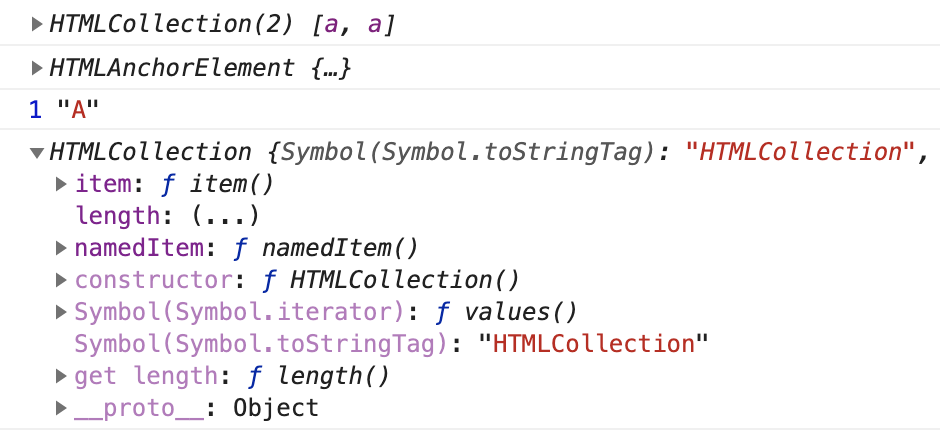
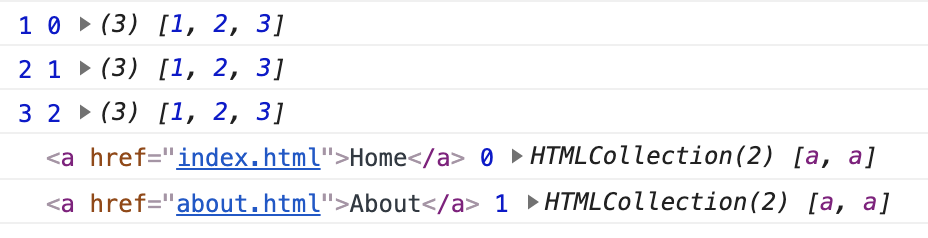
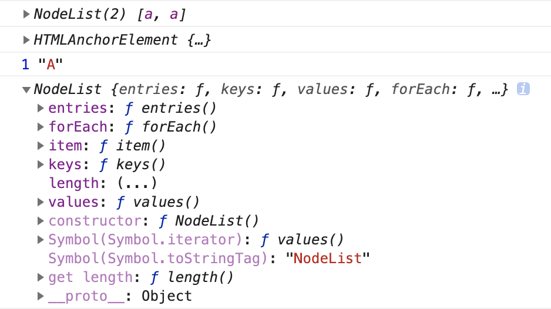

getElementsByTagName 的结果为什么不可以 forEach ？和 querySelectorAll 有什么区别
这篇文章发布于 2020/12/15，归类于 JavaScript
标签：
getElementsByTagName，querySelectorAll
在 JS DOM 编程艺术的例子中，看到 document.getElementsByTagName 后使用了 Array.from(xx) 将其结果转为标准数组后再使用 forEach。下面写个例子来验证为什么？
<nav>
<ul>
<li><a href="index.html">Home</a></li>
<li><a href="about.html">About</a></li>
</ul>
</nav>
<script>
let nav = document.getElementsByTagName('nav')[0]
let linkArr = nav.getElementsByTagName('a')
console.log(linkArr) // HTMLCollection [] => Object
console.log(linkArr[0].__proto__) // HTMLAnchorElement
// HTMLAnchorElement => HTMLElement => Element => Node => EventTarget => Object
// <nav> HTMLElement
// <li> HTMLLIElement
console.log(linkArr[0].nodeType, linkArr[0].nodeName) // 1 "A"
console.log(linkArr.__proto__) // HTMLCollection []
// Uncaught TypeError: linkArr.forEach is not a function
linkArr.forEach(item => console.log(item))
</script>getElementsByTagName返回结果类型
从上面的例子中，我们可以看到 getElementsByTagName 函数返回的数据类型是 HTMLCollection，类数组对象，并没有实现 forEach 方法，但它内部实现了迭代 for...of（Symbol.iterator）方法，因此可以使用 for、for...of 来遍历

我们换个思路，使用 Array.prototype.forEach.call 来调用试试
// forEach 基本用法
[1,2,3].forEach((item, index, array) => console.log(item, index, array))
// 使用 prototype.forEach 直接运行
let cb = (item, index, array) => console.log(item, index, array)
Array.prototype.forEach.call(linkArr, cb)可以正常执行，执行结果如下图。因此 Array 下的一些方法，我们可以使用 prototype 方式使用

querySelectorAll返回结果类型
同样是获取元素列表，querySelectorAll 返回的结果类型是 NodeList
// 和 querySelectorAll 对比
let linkArr2 = document.querySelectorAll('li a')
console.log(linkArr2) // NodeList [] => Object
console.log(linkArr2[0].__proto__) // HTMLAnchorElement
console.log(linkArr2[0].nodeType, linkArr2[0].nodeName) // 1
console.log(linkArr2.__proto__) // NodeList []
linkArr2.forEach(item => console.log(item))如下图，NodeList 类型实现了 forEach, for...of 等方法，所以可以直接使用 forEach 遍历

他们的区别：
- getElementsByTagName 返回的结果为
HTMLCollection类型，而 querySelectorAll 返回的结果为NodeList。HTMLCollection 并没有实现 forEach，无法使用点语法执行forEach，而 NodeList 是可以的。 - getElementsByTagName 返回的 HTMLCollection 是根据 dom 的变动实时更新的，而 querySelectorAll 不是动态的，它只是一个静态副本。